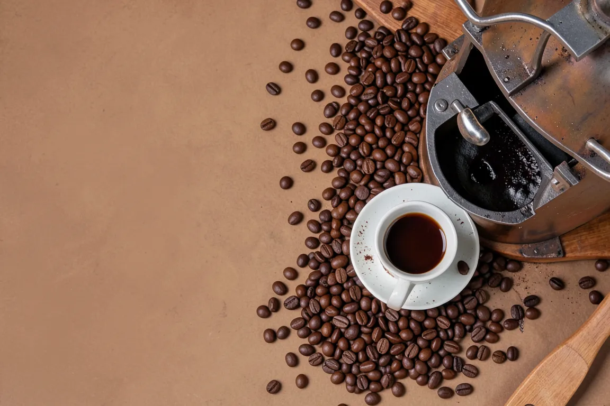

Nettleserens standardskrift, blå understrekede lenker, grå eller hvit bunn, ingen polering og synlig struktur. Det kom fra samlingen Brutalist Websites i 2014 og svarer på det glatte, maldrevne nettet.

Kjerneidé
En side er et dokument, ikke et produkt: vis den rå strukturen, så tjener nettet leseren uten dekor.
Designprinsipper
Bruk nettleserens standard: svart tekst på hvit (#FFFFFF) eller grå (#C0C0C0) bunn, lenker #0000EE, besøkte lenker #551A8B, understreket.
Sett brødteksten i en standard seriff eller en monospace på 16px med linjehøyde 1,3 til 1,5 og en linjelengde over 80 tegn eller full bredde.
Bygg oppsettet av enkle blokker: tabeller, lister og streker på 1px til 2px; høyst 2 kolonner.
Bruk ett enkelt størrelsesspenn på 2x: 16px brødtekst og 32px overskrifter, i fet, uten sporing.
Vis strukturen: synlige kanter på 1px, en hard strek på 2px mellom seksjoner og rå nettadresser i teksten.
Gjør hvert interaktive element til en innebygd kontroll: standardknapp, standard inndata, standard avkrysningsboks, ingen egen stil utover en kant på 1px.
Bruk høyst 2 farger pluss lenkeblå, og ingen overganger.
Antimønstre
Runde hjørner, skygger og gradienter
Egne nettskrifter utover én monospace eller seriff
Hero-seksjoner med et stockfoto
Myke rulleeffekter og inngangsanimasjoner
Ikonsett og illustrasjon
Kortoppsett med like fliser og polstring over 24px